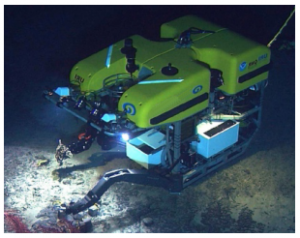
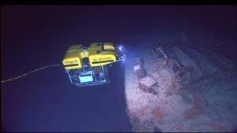
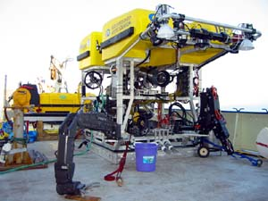

Hammond chairs a group on a fast track to plan and develop specifications for a major conversion of the former Navy ship USNS Capable. Following the award of a conversion contract and an estimated 12 to 18 months in a shipyard, the ship will be unique to NOAA and the federal fleet as the only U.S. government ship dedicated to exploring Earth's oceans. "If we plan well now, those scientists will be equipped for success," said Hammond "It will be a path finding ship for discovery and for mapping a route to ocean research."
 
 "We are excited about the possibilities this ship offers," said Rick Rosen, NOAA assistant administrator of NOAA Research. "While research largely involves the testing of hypotheses, scientists on this ship will do that and more—they'll be testing, but also generating, hypotheses." (Click image for larger view of the ROV Hercules equipped with high-intensity lights at the top, a high-definition video camera in the center, and manipulator arms, including one arm with force feedback, giving an operator the "feel" of handling delicate specimens miles below the ocean's surface. Click here for high resolution version, which is a large file. Photo courtesy of Mystic Aquarium/IFE.)
{kind=link}
{kind=link}